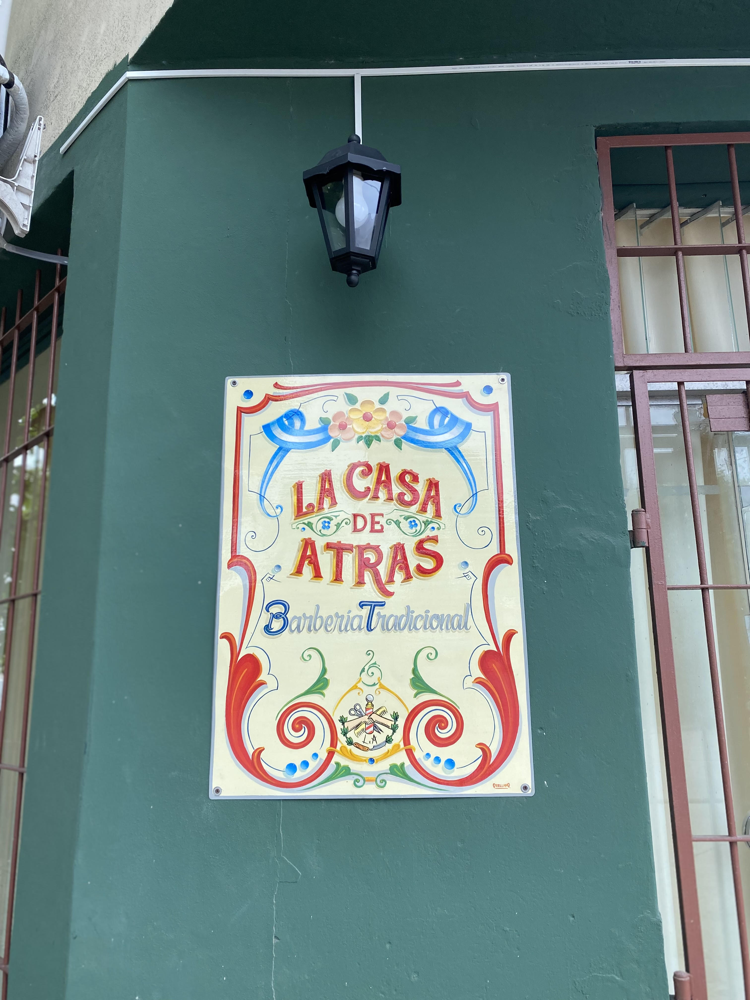
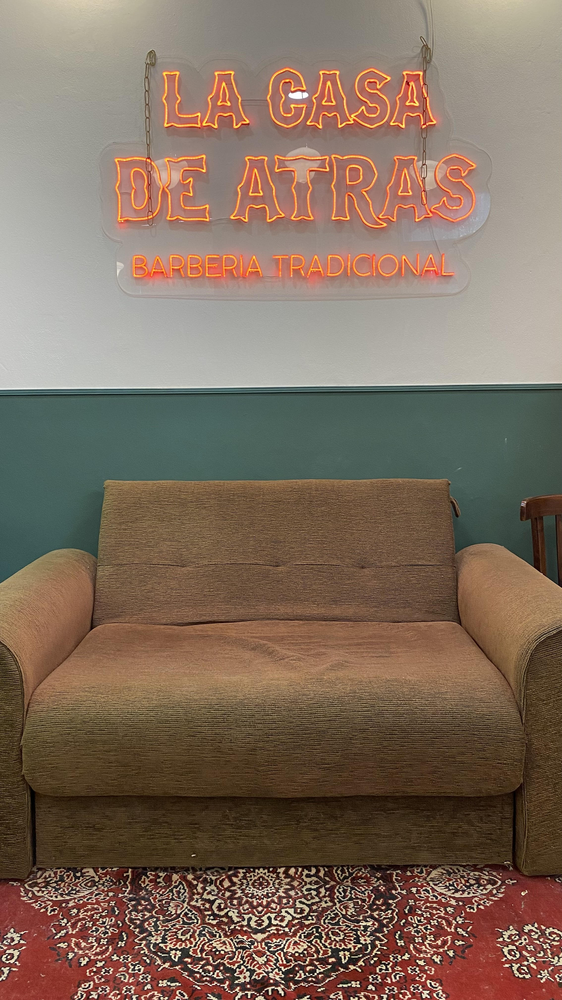
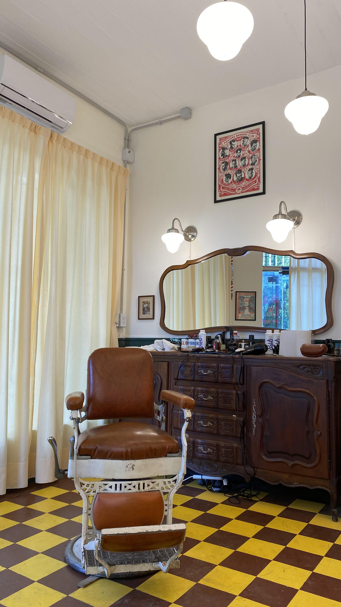

Historia
Bienvenido a una barbería que encarna la esencia de la tradición y la atención meticulosa al detalle. Sumérgete en un refugio de elegancia y sofisticación donde cada visita es una experiencia de cuidado personalizada. La historia de las barberías se remonta a tiempos antiguos, cuando estos establecimientos no solo eran lugares para el aseo, sino también centros sociales donde se compartían historias y se cultivaban relaciones. A lo largo de los años, las barberías han evolucionado, adaptándose a los cambios culturales y sociales, pero manteniendo su estatus como refugios para el cuidado masculino y la camaradería.


